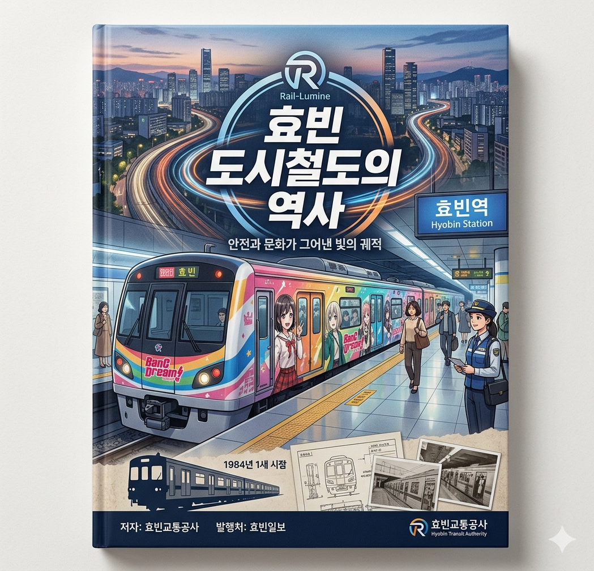

[신간] '효빈 도시철도의 역사'... 철도 동호인 필독서 등극
입력 2026.05.07 23:45
효빈교통공사, 개통부터 서브컬처 융합까지 담은 800페이지 분량 공식 백서 출간
오다구 전 사장의 혜안부터 박효빈 시장의 '레일루미네' 완성까지... 파란만장한 비화 수록
초판 1만 부 반나절 만에 완판... 특별 부록 '마스코트 & 래핑열차 설정집'에 동호인들 환호

[효빈일보 = 김독서 기자] 효빈광역시의 대동맥이자 전 세계 서브컬처 팬들의 거대한 성지인 효빈 도시철도의 어제와 오늘을 집대성한 공식 백서, 『효빈 도시철도의 역사: 안전과 문화가 그어낸 빛의 궤적』이 7일 정식 출간됐다.
단순한 철도 기술 서적을 넘어 과거 시정의 억압에 맞선 시민들의 기록과 성공적인 문화 행정의 표본을 담은 이 책은, 출간 반나절 만에 초판 1만 부가 전량 매진되는 기염을 토했다.
총 800페이지에 달하는 방대한 분량의 이 책은 크게 세 파트로 나뉜다. 1부에서는 1984년 1호선 개통을 시작으로 철도망이 뻗어나가던 태동기를 다루며, 서브컬처 접목의 초석을 다진 전설적인 인물 '오다구' 전 사장의 파격적인 보고서 원문이 최초로 공개됐다.
2부 '어둠과 저항' 편은 독자들의 묵직한 공감을 이끌어낸다. 과거 윤대환 전 시장 시절 자행된 대중교통 축소 정책, 5호선 공사 중단 사태, 그리고 7호선(트램)을 지키기 위해 연대했던 시민들과 역무원(임세정 등)들의 치열했던 투쟁 기록이 생생하게 묘사되어 있다.
가장 뜨거운 반응을 얻고 있는 부분은 단연 3부 '문화의 기적'이다. 박효빈 시장 취임 이후 완성된 고유 색상 기반의 철도 마스코트 세계관 '레일루미네(Rail-Lumine)'의 탄생 과정과, 부시로드(Bushiroad)와의 콜라보레이션인 '뱅드림!(BanG Dream!) 래핑열차' 도입 비화가 낱낱이 기록되었다.
특히 부록으로 제공되는 '노선별 마스코트 & 래핑열차 공식 설정집'은 각 노선의 상징색 코드와 캐릭터 간의 유사성을 디테일하게 설명해 동호인들의 찬사를 받고 있다. 설정집에 명시된 노선별 매칭은 다음과 같다.
- 파란색(#0077DD) 1호선: 고나미 - 하나조노 타에
- 초록색(#00CCAA) 2호선: 하루빈 - 아오바 모카
- 노란색(#FFCC11) 3호선: 박라미 - 야마부키 사아야
- 주황색(#FF5522) 4호선: 다로나 - 토야마 카스미
- 빨간색(#EE0022) 5호선: 미소하 - 미타케 란
- 보라색(#881188) 6호선: 라세나 - 미나토 유키나
- 분홍색(#FF8899) 7호선: 임세정·임세하 - 치하야 아논
- 연보라색(#9856FF) 8호선: 유리아 - 와카미야 이브
- 연청색(#6677CC) 빈효선: 전노아 - 쿠라타 마시로
이외에도 빈주1호선(황금색, #CFBA0F) 마스코트 박빛나, 빈주2호선(보라색, #C455F6) 김소빈, 그리고 덕주1호선(핫핑크, #FF4F91)까지 권역 전체를 아우르는 컬러 마케팅의 전모가 수록되어 있다.
박효빈 시장은 추천사를 통해 "이 책은 단순한 철도의 역사가 아니라, 위기에 맞서 도시의 고유한 문화를 지켜낸 우리 효빈 시민들의 서사시"라며, "편견을 뚫고 달려온 효빈의 열차는 앞으로도 차별 없이 모든 이들의 일상을 싣고 달릴 것"이라고 밝혔다.
『효빈 도시철도의 역사』는 효빈교통공사 본사 및 각 지하철역 거점 굿즈샵, 전국 주요 서점에서 구매할 수 있으며, 2쇄 발행본은 오는 주말부터 순차적으로 입고될 예정이다.